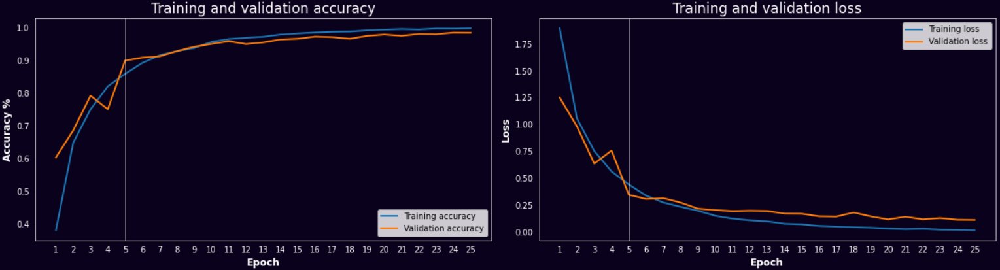
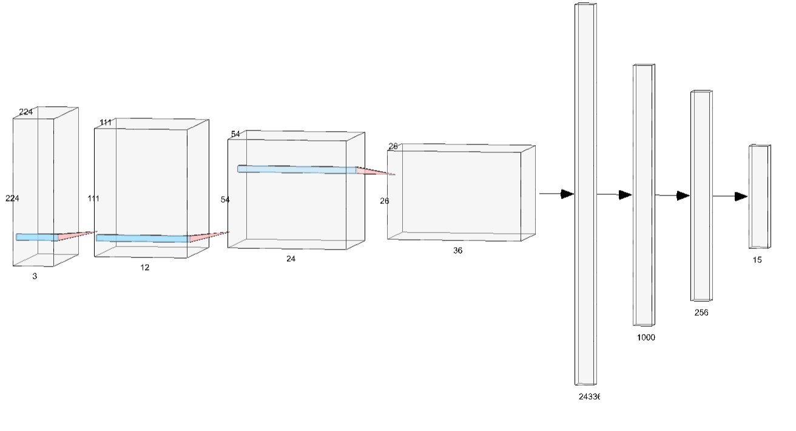

{% extends "index.html" %}
{% block head %}
{{ super() }}
{% endblock %}
{% block line %}
Training
The model is trained for 5 epochs as the image below shows that there is the elbow point in the accuracy and loss plot. This will prevent model overfitting.
During training the cross entropy loss is applied as this is a classification problem.

Model architecture
The model is a classical convolutional neural network. Which consists of two parts. The first part, the convolutional part. Three convolutional blocks were used with
a 3x3 filter. Between the filters maxpooling 2D with a 2x2 filter is applied and a Relu non liniarity. The second part consist of the prediction part. The convolutional parameters
are flattend and shrined to 15 output parameters. During training dropout is used with a dropout rate of 0.1 to prevent overfitting. The SGD optimizer is used during training with
a learning rate of 0.0001 combined with 0.9 momentum to overcome oscillations in the search space. The batch size during training was 32. The model architecture can be found below. Due to time limitations is has not been
possible to perform a grid search over the parameters.

Feature maps
In the trial, the feature maps corresponding to the uploaded image are shown . These are generated by applying the filters of the first convolutional layer on the input image of the trained model.
By visualizing the feature maps, it is possible to get a rough idea of which kind of filter the model has developed during training.
For example, edge detection, forground background seperation and highlighing similar colours. Not all filters are interpretable for humans.
{% endblock %}